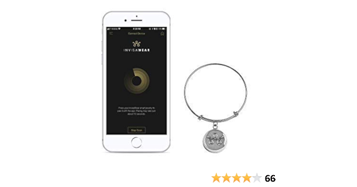
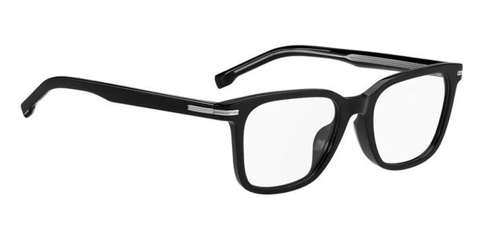
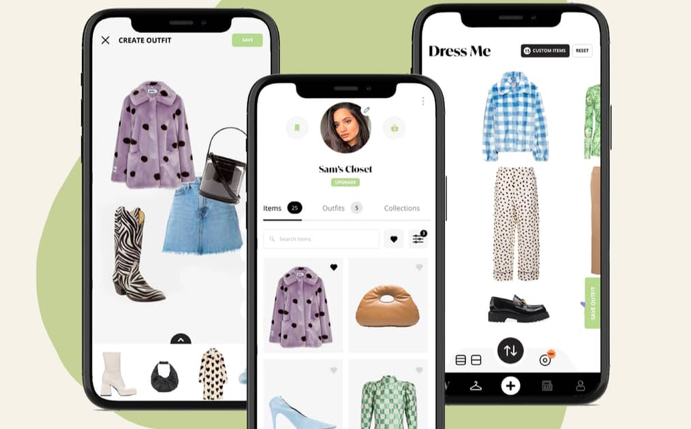
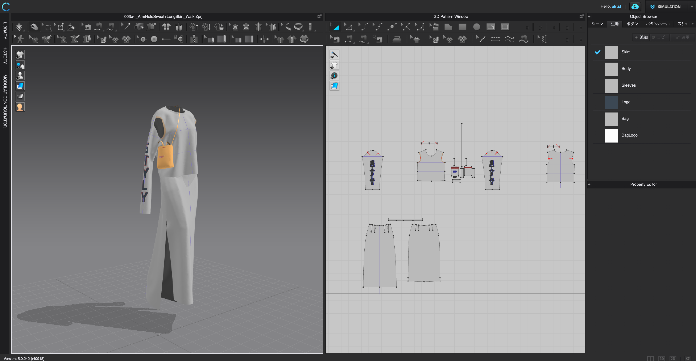

Context
Fashion is one of the biggest industries in the globe, the fashion industry represents the seventh-largest economy in the world. Trends always seem to skyrocket and become popular, but where does technology play a role? This site focuses on technology used in the fashion industry currently and possibly in the future.
Existing Technology
Invisawear
A company producing smart jewelry that uses Bluetooth low energy and requires installation of an app on your phone for it to work.
Bose Frame
are audio sunglasses, they can connect to Bluetooth from your phone. The hardware of these sunglasses includes the batteries, frame design, and audio components. The software of these sunglasses are the voice assistants and the Base connection app.
Whering
A wardrobe app for organizing, styling, and planning clothes.
Clo 3D
a CMS (content management system) and a collaboration platform to design. Clo 3d is a software that allows you to share, optimize, and monitor multiple designs. This software is used by most companies in the fashion industry. This saves their budget and is eco-friendly. Instead of error and trial on materials, you can easily surpass designs on this wonderful creation, with little to no frustration.
Possible Future Technology
Virtual Mannequin
This software is a 3d program that allows you to preview different designs and clothing on a mannequin. You can adjust the shape/size of the mannequin to your liking in order to see how it fits in all sizes. This is very helpful when you want to see different designs on different body types. This takes up less of your time compared to sketching everything.
IT bot
This is a robot, sort of like Wall-E in Disney. It can speak any language. You can ask this bot what outfit is best fit for you. IT even checks the weather and picks what is appropriate.This bot may become your best friend, it is available anytime and it can charge itself. The IT bot can also color-match your skin tone and give you personal suggestions for a glow-up!